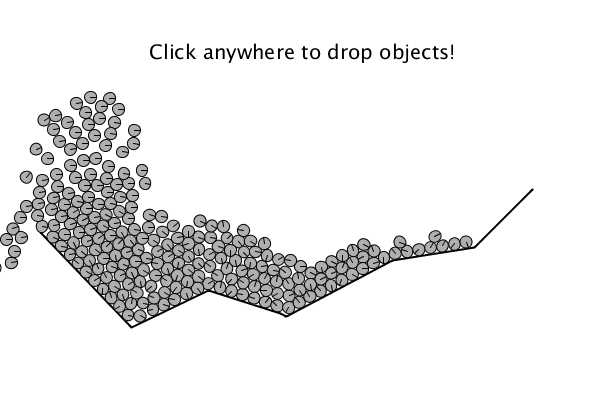

In real life, objects typically make inelastic collisions (as opposed to elastic and perfectly inelastic collisions which are simpler). Round objects can also roll but depending on how fast the object is rolling, it may slip if the coefficient of friction isn't large enough to keep it rotating at the same rate that it travels across the ground (think: tires on snow). What if instead of a few objects we were dealing with dozens or more?
How do we solve these kinds of problems? Answer: Use a computer!
Physicists and Computer Animators use a method called Verlet integration. (Note: Verlet is pronounced "Ver-lay".) The Verlet integration method figures out the positions, velocities and the rotation of all the objects AND it includes a highly-efficient algorithm for figuring out if two objects -- round or some other shape -- are colliding. For square or polygonal shapes the "collision detection" turns out to be more tricky to program than you might think. Probably every computer-generated film you have ever seen has used Verlet integration. Computer animators sometimes talk about using particle systems, but this is essentially the same thing as Verlet integration.
The most widely used Verlet integration algorithm is called Box2D. Notably this is the engine behind a number of popular games, including Angry Birds. It is also the basis of Google's Liquid Fun and it is similar to the libraries used in the unity game engine to include realistic physics in games you may have played.
Since Box2D is an open source library, the venerable Daniel Shiffman (author of Nature of Code) devised a way to use Box2D in the processing framework (see Step 4 below). In Chapter 5 of the Nature of Code Shiffman explains more about how Box2D works.
Below is a substantially modified version of one of the examples from Chapter 5 of the Nature of Code. The user clicks on the screen to create a surface and then you add round objects that can roll and bounce.
Screenshot:

Interactive version (by Physics 1250 student Savva Madar):
Processing code:
Step 1. Create a folder called roll and download these four files:
Step 2. Make sure the processing interface is installed if it isn't already
Step 3. Double click on roll.pde to start the processing interface
Step 4. Install the Box2D library. Do this by pressing sketch at the top, clicking import library and find the Box2D for Processing Library by Daniel Schiffman
Step 5. Press the play button. Have fun!
The coefficient of kinetic friction is set by coeff_friction. What happens if you increase it? Is there a noticeable difference?
The coefficient of restitution is set by coeff_resititution. If coeff_restitution=1 then the collisions are elastic. If coeff_restitution=0 then the collisions are (almost) perfectly inelastic. I say almost because the objects do not actually stick together. Experiment with the coefficient of restitution and see if you can notice a difference!
Create a bowl shape like in the image above and fill it up with round objects. Does it start to behave like a liquid? It should! Liquids are substances there is very little space between atoms but the atoms can still move past each other. You can decrease the size of the objects to make it even more liquid-like. Also check out Goggle's Liquid fun which is also based on Box2D.